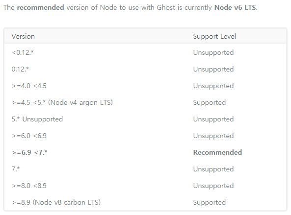

ghost + buster + github page
블로그를 시작해야지. 라고 마음을 먹었을 때 염두에 둔 플랫폼은 github page였다.
정적 페이지라서, github이 호스팅을 해 줘서, git으로 버전 관리를 해 줘서... 같은 의미가 있었던 것은 아니고, 단지 다른 개발자 들이 많이 쓰는거 같으니까... 따라가려는 사소한 마음으로 시작하였다.
하지만 공식문서대로 Jekyll로 하려니 예전에도 해 봣지만 별로 안 이쁜거 같고. 어디선가 ghost로 블로그를 만들어서 github로 올릴 수 있다고 본거 같아서 따라하게 되었다. 그리고 이 글은 그 글을 따라하면서의 삽질의 기록이다.
간략하게 진행할 내용을 말하자면 ghost 설치, buster 설치 의 내용이 전부다.
설치할때 참조한 문서는 Publish with Ghost on Github Pages.
우선 ghost를 설치할 서버를 설정한다. 로컬에 진행하여도 상관 없지만, Google Compute Engine에 가입하니 1년에 $300 쿠폰이 나와서 그냥 깨끗하게 서버로 진행 하기로 한다.
GCE 서버 설정은 각자가 진행 하고... 난 그냥 g1-small 사양에다가 debian os를 선택해서 진행 하였다. 그나마 메모리가 1.6G나 되서 swap을 별도로 안 만들어줘도 되서 다행.
system update
서버를 선택하고 아무것도 하지 않았다면 시스템 업데이트를 하고 필수 패키지를 설치한다.
sudo apt update
sudo apt dist-upgrade
sudo apt install build-essential git python-all-dev virtualenv
python-all-dev와 virtualenv를 보면 알겠지만 python3를 설치하지 않고 python2를 설치한다. 굳이 2를 설치하고 싶진 않았지만 어쩔 수 없었다. 이유는 나중에.
node js install
이제 ghost를 설치해야 한다. ghost는 node js로 개발되어 있으니 node js를 설치하자. apt로 설치하려고 봤더니 4.8.2가 설치되려나 보다. 그런데 지금 ghost 홈페이지에서는 Node v6 LTS를 권장한다고 한다. 음... 뭔가 찝찝하니까 v6 LTS를 설치하자.

다행히도 node js는 NVM으로 사용자의 로컬에 원하는 버전을 지정하여 선택 할 수가 있다. NVM 부터 설치 해 보자.
curl -o- https://raw.githubusercontent.com/creationix/nvm/v0.33.6/install.sh | bash
bash
nvm install --lts=boron
node --version
본래 첫 줄을 실행해 주고 나서, 새로 터미널을 열어라고 나왔는데, 귀찬아서 그냥 bash를 새로 실행시켰다. nvm install --lts 로 설치를 하면 v8이 설치되는데 v6을 맞추려고 --lts=boron 옵션을 줬다. 설치가 마치고 나면 node --version를 실행해서 원하는 버전의 노드가 설치되었는지 확인해 보자.
ghost install
node js가 설치되었으니, ghost를 설치해볼 차례이다. ghost를 실제 블로그로 사용하려면 웹서버나 데이터베이스 설정을 해야 겠지만 단지 github page 생성을 위해 사용할 예정이니 그런 작업은 필요 없다. ghost의 install-local 문서대로 그냥 진행 한다.
npm install -g ghost-cli
mkdir blog
cd blog
ghost install local
예전에는 github에서 zip파일을 다운 받아서 진행했던거 같은데, ghost-cli가 따로 생겼다. ghost-cli는 ghost 블로그 생성, 서비스 시작/종료, 업데이트 같은 작업을 관리해 주니 가급적 사용하는게 좋을 것 같다. 공식 문서에서 나와 있으니. ghost-cli를 설치해서 작업을 진행하자.
그리고 저 과정을 거치고 나면 ghost-cli에서 이미 ghost를 실행해 둔 상태라 포트 2368로 접속하면 설치된 것을 확인 할 수 있다. aws나 gce를 사용하는 사람이라면 방화벽에서 2368을 열어둬야 확인 할 수 있다.
buster install
ghost 설치를 완료하고 나면 기본작업은 끝났다. 이대로 사용해도 되지만 (보안이나 웹설정은 모르겠고. 일단 블로그가 보인다는 것에 만족) 목표는 github page로 등록하는 것이니 buster를 설치한다. buster는 ghost를 위한 github 정적 페이지 생성기 이다. 그냥 대충 동작하는 것을 보면 ghost 블로그의 사이트를 wget으로 스크랩해서 동작하는 듯 하다. 뭔가 ghost buster 의도적인 이름 같기는 한데...
virtualenv .env
source .env/bin/activate
pip install -U pip setuptool
pip install buster
buster setup
buster generate
buster를 설치한다. python3를 사용했다면 가상환경 만들때 python3 -mvenv .env 처럼 했을건데 python3 환경에서 buster를 설치하려고 하니 에러가 난다. 고쳐서 쓸 생각은 없으니 python2로 진행.
buster generate를 실행하면 실행 경로에 static 폴더가 생기는데 거기가 거기다. 블로그의 정적 파일이 생성 된 곳.
그리고 github에 글을 올리면 끝.
cd static
git init
git remote add origin git@github.com:USER/USER.github.io.git
git add --all
git commit -m "Ghost Ready"
git push -u origin master -f
GCE 서버에 설치하였고 github page를 등록하고 나면 ghost는 다음 글을 올릴때 까지 쓸 일이 없으니 ghost stop으로 ghost를 정지 시키자, 다음에 글을 쓰고 싶을때 ghost start로 시작시키면 그만이다.